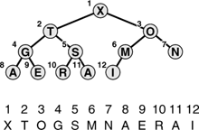

C++ Programming Robert Sedgewick - Princeton University Addison Wesley Professional Algorithms in C++, Parts 1–4: Fundamentals, Data Structure, Sorting, Searching, Third Edition
9.2. Heap Data Structure
The main topic of this chapter is a simple data structure called the heap that can efficiently support the basic priority-queue operations. In a heap, the records are stored in an array such that each key is guaranteed to be larger than the keys at two other specific positions. In turn, each of those keys must be larger than two more keys, and so forth. This ordering is easy to see if we view the keys as being in a binary tree structure with edges from each key to the two keys known to be smaller.
Definition 9.2. |
A tree is heap-ordered if the key in each node is larger than or equal to the keys in all of that node's children (if any). Equivalently, the key in each node of a heap-ordered tree is smaller than or equal to the key in that node's parent (if any)
|
Property 9.1. No node in a heap-ordered tree has a key larger than the key at the root|
We could impose the heap-ordering restriction on any tree. It is particularly convenient, however, to use a complete binary tree. Recall from Chapter 3 that we can draw such a structure by placing the root node and then proceeding down the page and from left to right, connecting two nodes beneath each node on the previous level until N nodes have been placed. We can represent complete binary trees sequentially within an array by simply putting the root at position 1, its children at positions 2 and 3, the nodes at the next level in positions 4, 5, 6 and 7, and so on, as illustrated in Figure 9.2.
|
Considering the element in position  i/2 i/2 in an array to be the parent of the element in position i, for 2 in an array to be the parent of the element in position i, for 2  i N (or, equivalently, considering the ith element to be the parent of the 2ith element and the (2i + 1)st element), corresponds to a convenient representation of the elements as a tree. This correspondence is equivalent to numbering the nodes in a complete binary tree (with nodes on the bottom as far left as possible) in level order. A tree is heap-ordered if the key in any given node is greater than or equal to the keys of that node's children. A heap is an array representation of a complete heap-ordered binary tree. The ith element in a heap is larger than or equal to both the 2ith and the (2i + 1)st elements. i N (or, equivalently, considering the ith element to be the parent of the 2ith element and the (2i + 1)st element), corresponds to a convenient representation of the elements as a tree. This correspondence is equivalent to numbering the nodes in a complete binary tree (with nodes on the bottom as far left as possible) in level order. A tree is heap-ordered if the key in any given node is greater than or equal to the keys of that node's children. A heap is an array representation of a complete heap-ordered binary tree. The ith element in a heap is larger than or equal to both the 2ith and the (2i + 1)st elements.

Definition 9.3. A heap is a set of nodes with keys arranged in a complete heap-ordered binary tree, represented as an array|
We could use a linked representation for heap-ordered trees, but complete trees provide us with the opportunity to use a compact array representation where we can easily get from a node to its parent and children without needing to maintain explicit links. The parent of the node in position i is in position i/2, and, conversely, the two children of the node in position i are in positions 2i and 2i + 1. This arrangement makes traversal of such a tree even easier than if the tree were implemented with a linked representation, because, in a linked representation, we would need to have three links associated with each key to allow travel up and down the tree (each element would have one pointer to its parent and one to each child). Complete binary trees represented as arrays are rigid structures, but they have just enough flexibility to allow us to implement efficient priority-queue algorithms.
We shall see in Section 9.3 that we can use heaps to implement all the priority queue operations (except join) such that they require logarithmic time in the worst case. The implementations all operate along some path inside the heap (moving from parent to child toward the bottom or from child to parent toward the top, but not switching directions). As we discussed in Chapter 3, all paths in a complete tree of N nodes have about lg N nodes on them: there are about N/2 nodes on the bottom, N/4 nodes with children on the bottom, N/8 nodes with grandchildren on the bottom, and so forth. Each generation has about one-half as many nodes as the next, and there are at most lg N generations.
We can also use explicit linked representations of tree structures to develop efficient implementations of the priority-queue operations. Examples include triply-linked heap-ordered complete trees (see Section 9.5), tournaments (see Program 5.19), and binomial queues (see Section 9.7). As with simple stacks and queues, one important reason to consider linked representations is that they free us from having to know the maximum queue size ahead of time, as is required with an array representation. We also can make use of the flexibility provided by linked structures to develop efficient algorithms, in certain situations. Readers who are inexperienced with using explicit tree structures are encouraged to read Chapter 12 to learn basic methods for the even more important symbol-table ADT implementation before tackling the linked tree representations discussed in the exercises in this chapter and in Section 9.7. However, careful consideration of linked structures can be reserved for a second reading, because our primary topic in this chapter is the heap (linkless array representation of the heap-ordered complete tree).
|
Exercises |  9.17 Is an array that is sorted in descending order a heap? 9.17 Is an array that is sorted in descending order a heap?
| |  9.18 The largest element in a heap must appear in position 1, and the second largest element must be in position 2 or position 3. Give the list of positions in a heap of size 15 where the kth largest element (i) can appear, and (ii) cannot appear, for k = 2, 3, 4 (assuming the values to be distinct). 9.18 The largest element in a heap must appear in position 1, and the second largest element must be in position 2 or position 3. Give the list of positions in a heap of size 15 where the kth largest element (i) can appear, and (ii) cannot appear, for k = 2, 3, 4 (assuming the values to be distinct).
| |  9.19 Answer Exercise 9.18 for general k, as a function of N, the heap size. 9.19 Answer Exercise 9.18 for general k, as a function of N, the heap size.
| | 9.20 Answer Exercises 9.18 and 9.19 for the kth smallest element. |
|